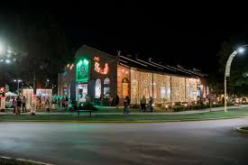
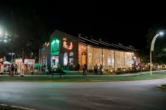
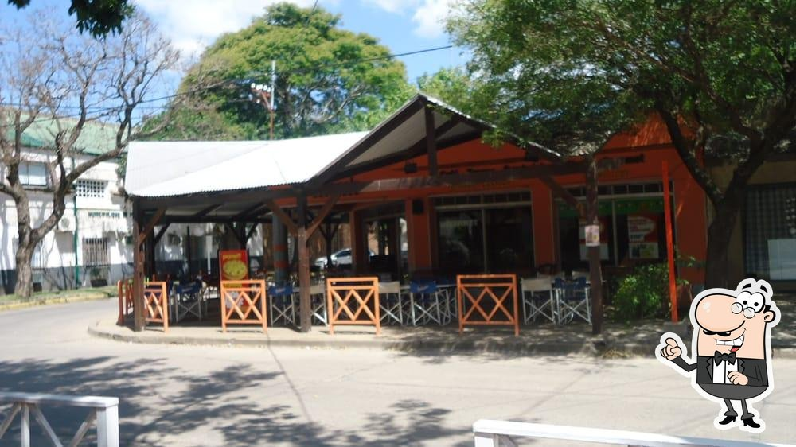
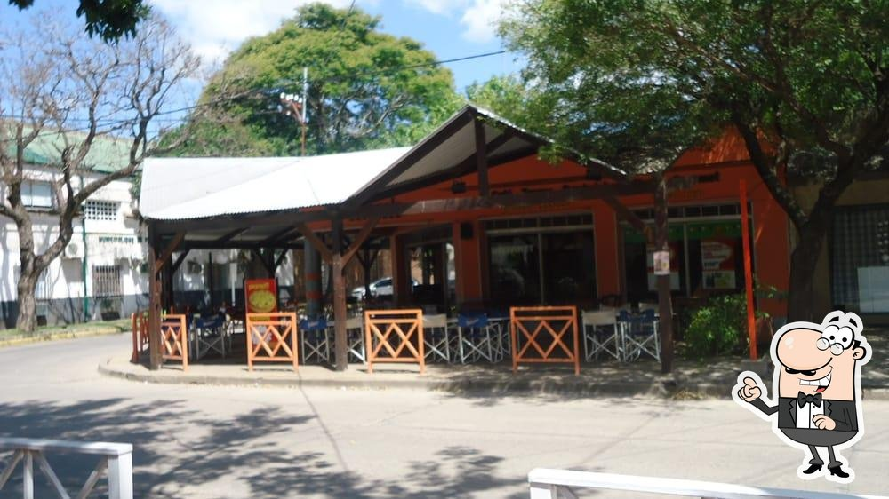
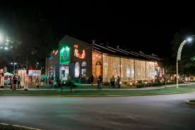
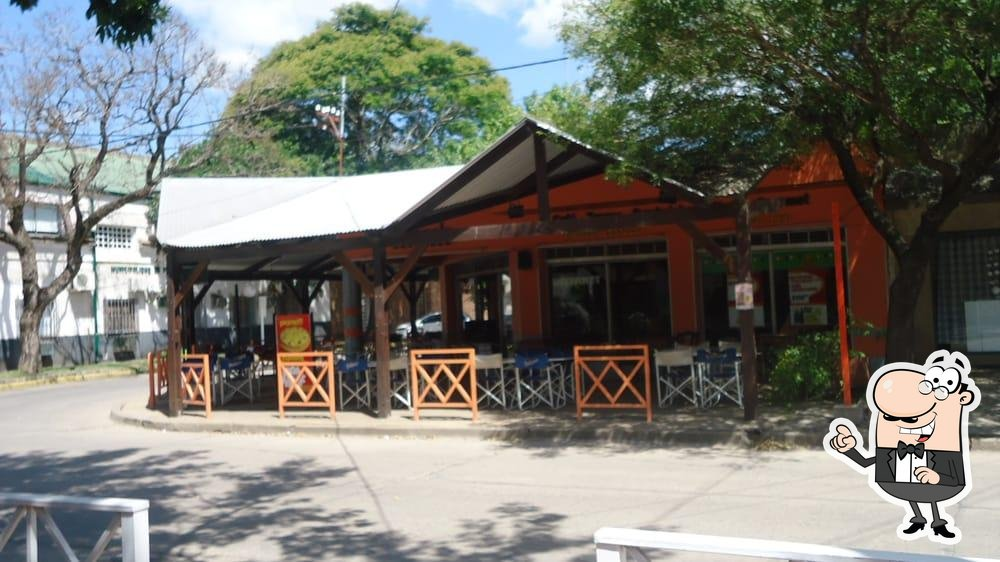

 

Funes es una ciudad ubicada en la provincia de Santa Fe, Argentina. Se encuentra a unos 20 km al norte de Rosario, una de las ciudades más grandes del país. Funes es conocida por su entorno natural, con numerosos parques y espacios verdes, así como por su cercanía a la ciudad de Rosario.

